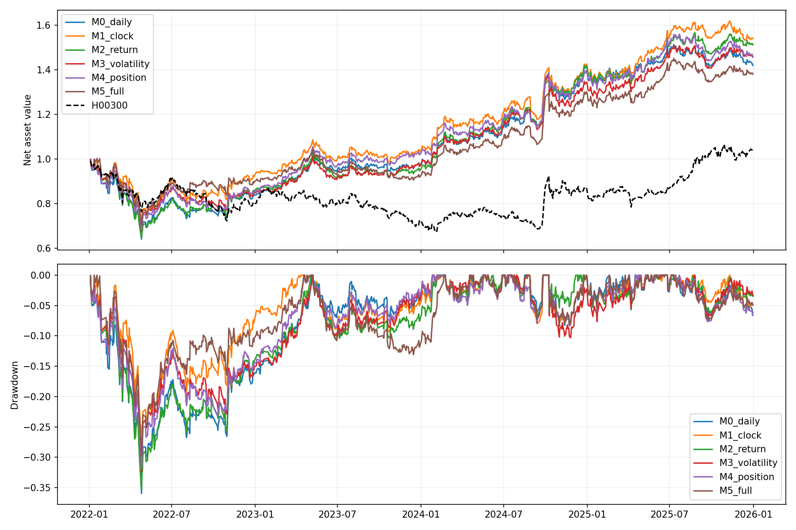

2022—2025，初始100万元；固定Top10、前80退出、新进第1名替换、止盈10%、含费止损4%、T+1、止盈无额外冷却、止损次交易日可重入。共64次新增季度拟合，复用32个模型；28个账户。没有扩大参数网格或切换V10。
M0＝日频15；M1＝M0＋时段进度；M2＝M1＋6个分钟/相对收益；M3＝M1＋4个分钟波动/振幅；M4＝M1＋量比、VWAP偏离、开盘以来收益；M5＝全部29因子。M1是控制时段信息后的参照。
各输入使用完全相同的成熟样本、收益排名标签、年度树数和其他训练参数。新增模型没有重新选树数，因此结论只适用于当前固定训练预算，不能证明分钟因子在所有参数、容量或其他预测期限下无效。训练每天抽样4个时点，评价涵盖全部可用5分钟时点。
| 模型 | 排名检查频率 | 执行滞后线数 | 每边额外摩擦bp | 净年化 | 最大回撤 | 费用元 | 完整交易次数 | 排名退出次数 |
|---|---|---|---|---|---|---|---|---|
| M0 日频15 | 5m | 2 | 0 | 9.56% | 35.94% | 186,904.18 | 966 | 346 |
| M0 日频15 | 5m | 2 | 10 | 5.50% | 36.28% | 342,385.43 | 987 | 349 |
| M1 加时段进度 | 5m | 2 | 0 | 11.88% | 28.69% | 199,110.96 | 977 | 357 |
| M1 加时段进度 | 5m | 2 | 10 | 8.49% | 33.67% | 377,016.19 | 1013 | 346 |
| M2 加分钟收益 | 5m | 2 | 0 | 11.37% | 35.27% | 210,001.18 | 1107 | 501 |
| M2 加分钟收益 | 5m | 2 | 10 | 5.04% | 39.43% | 376,550.79 | 1162 | 501 |
| M3 加分钟波动 | 5m | 2 | 0 | 10.32% | 32.39% | 200,749.95 | 1041 | 460 |
| M3 加分钟波动 | 5m | 2 | 10 | 1.44% | 36.32% | 341,292.90 | 1056 | 464 |
| M4 加量价位置 | 5m | 2 | 0 | 10.29% | 31.92% | 196,586.87 | 998 | 368 |
| M4 加量价位置 | 5m | 2 | 10 | 5.79% | 33.71% | 349,686.76 | 986 | 357 |
| M5 全部29因子 | 5m | 2 | 0 | 8.75% | 29.78% | 234,156.15 | 1225 | 631 |
| M5 全部29因子 | 5m | 2 | 10 | 3.05% | 34.37% | 406,094.82 | 1224 | 626 |

30分钟／每日仅限制主动排名退出及强势替换，止盈止损和空位补仓仍每5分钟判断。每日排名检查09:45；强势信号相对上一排名检查时点定义。lag2为原等待一根完整5分钟线，lag3额外再延迟5分钟。不同费用会改变含费止损和资金路径，压力测试不是简单扣固定收益。
| 模型 | 排名检查频率 | 执行滞后线数 | 每边额外摩擦bp | 净年化 | 最大回撤 | 费用元 | 完整交易次数 | 排名退出次数 |
|---|---|---|---|---|---|---|---|---|
| M0 日频15 | 30m | 2 | 0 | 9.68% | 33.37% | 186,149.28 | 953 | 338 |
| M0 日频15 | 30m | 2 | 10 | 8.67% | 33.45% | 356,088.53 | 953 | 334 |
| M0 日频15 | daily | 2 | 0 | 9.73% | 31.21% | 192,362.98 | 965 | 335 |
| M0 日频15 | daily | 2 | 10 | 5.38% | 36.20% | 353,175.40 | 993 | 340 |
| M1 加时段进度 | 30m | 2 | 0 | 14.92% | 28.22% | 206,622.00 | 962 | 337 |
| M1 加时段进度 | 30m | 2 | 10 | 7.97% | 33.64% | 361,607.93 | 998 | 341 |
| M1 加时段进度 | daily | 2 | 0 | 10.42% | 28.47% | 194,390.51 | 969 | 357 |
| M1 加时段进度 | daily | 2 | 10 | 8.61% | 33.46% | 359,464.65 | 975 | 342 |
| M5 全部29因子 | 30m | 2 | 0 | 8.42% | 31.48% | 197,483.59 | 1057 | 429 |
| M5 全部29因子 | 30m | 2 | 10 | 4.61% | 36.41% | 358,892.80 | 1073 | 430 |
| M5 全部29因子 | daily | 2 | 0 | 10.52% | 31.44% | 182,620.02 | 938 | 336 |
| M5 全部29因子 | daily | 2 | 10 | 2.70% | 36.01% | 320,137.71 | 973 | 346 |
| M1 加时段进度 | 5m | 3 | 0 | 12.11% | 29.47% | 196,399.67 | 951 | 359 |
| M1 加时段进度 | 5m | 3 | 10 | 8.84% | 32.05% | 366,294.62 | 992 | 367 |
| M5 全部29因子 | 5m | 3 | 0 | 10.07% | 28.62% | 234,645.19 | 1190 | 619 |
| M5 全部29因子 | 5m | 3 | 10 | 3.96% | 33.70% | 411,202.73 | 1226 | 632 |
| model | M0_daily | M1_clock | M2_return | M3_volatility | M4_position | M5_full |
|---|---|---|---|---|---|---|
| year | ||||||
| 2022 | 0.0609 | 0.0609 | 0.0634 | 0.0635 | 0.0626 | 0.0642 |
| 2023 | 0.1145 | 0.1148 | 0.1160 | 0.1144 | 0.1133 | 0.1142 |
| 2024 | 0.1141 | 0.1144 | 0.1116 | 0.1121 | 0.1130 | 0.1105 |
| 2025 | 0.0202 | 0.0181 | 0.0212 | 0.0174 | 0.0176 | 0.0187 |
统计推断先按日期聚合，不能把同日48个时点当独立样本。配对区块60/120交易日、2000次重采样；区间不能抵消此前历史选择偏差。
| model | baseline | metric | extra_bp | block_days | difference | lower | upper | replications |
|---|---|---|---|---|---|---|---|---|
| M1_clock | M0_daily | daily_rank_ic_difference | 0 | 60 | -0.00033 | -0.00156 | 0.00097 | 2000 |
| M5_full | M0_daily | daily_rank_ic_difference | 0 | 60 | -0.00047 | -0.00234 | 0.00127 | 2000 |
| M2_return | M1_clock | daily_rank_ic_difference | 0 | 60 | 0.00099 | -0.00125 | 0.00273 | 2000 |
| M3_volatility | M1_clock | daily_rank_ic_difference | 0 | 60 | -0.00018 | -0.00216 | 0.00147 | 2000 |
| M4_position | M1_clock | daily_rank_ic_difference | 0 | 60 | -0.00043 | -0.00289 | 0.00180 | 2000 |
| M5_full | M1_clock | daily_rank_ic_difference | 0 | 60 | -0.00013 | -0.00236 | 0.00165 | 2000 |
| M1_clock | M0_daily | net_cagr_difference | 0 | 60 | 0.02325 | -0.04024 | 0.08368 | 2000 |
| M5_full | M0_daily | net_cagr_difference | 0 | 60 | -0.00809 | -0.08793 | 0.07297 | 2000 |
| M2_return | M1_clock | net_cagr_difference | 0 | 60 | -0.00512 | -0.06001 | 0.05311 | 2000 |
| M3_volatility | M1_clock | net_cagr_difference | 0 | 60 | -0.01558 | -0.06116 | 0.03231 | 2000 |
| M4_position | M1_clock | net_cagr_difference | 0 | 60 | -0.01594 | -0.06233 | 0.03438 | 2000 |
| M5_full | M1_clock | net_cagr_difference | 0 | 60 | -0.03134 | -0.09405 | 0.03349 | 2000 |
| M1_clock | M0_daily | net_cagr_difference | 10 | 60 | 0.02991 | -0.02669 | 0.08485 | 2000 |
| M5_full | M0_daily | net_cagr_difference | 10 | 60 | -0.02448 | -0.09624 | 0.03984 | 2000 |
| M2_return | M1_clock | net_cagr_difference | 10 | 60 | -0.03444 | -0.09644 | 0.02681 | 2000 |
| M3_volatility | M1_clock | net_cagr_difference | 10 | 60 | -0.07053 | -0.12434 | -0.01695 | 2000 |
| M4_position | M1_clock | net_cagr_difference | 10 | 60 | -0.02703 | -0.06734 | 0.01761 | 2000 |
| M5_full | M1_clock | net_cagr_difference | 10 | 60 | -0.05438 | -0.10990 | 0.01230 | 2000 |
| M1_clock | M0_daily | daily_rank_ic_difference | 0 | 120 | -0.00033 | -0.00153 | 0.00110 | 2000 |
| M5_full | M0_daily | daily_rank_ic_difference | 0 | 120 | -0.00047 | -0.00201 | 0.00130 | 2000 |
| M2_return | M1_clock | daily_rank_ic_difference | 0 | 120 | 0.00099 | -0.00107 | 0.00267 | 2000 |
| M3_volatility | M1_clock | daily_rank_ic_difference | 0 | 120 | -0.00018 | -0.00229 | 0.00154 | 2000 |
| M4_position | M1_clock | daily_rank_ic_difference | 0 | 120 | -0.00043 | -0.00277 | 0.00184 | 2000 |
| M5_full | M1_clock | daily_rank_ic_difference | 0 | 120 | -0.00013 | -0.00237 | 0.00178 | 2000 |
| M1_clock | M0_daily | net_cagr_difference | 0 | 120 | 0.02325 | -0.04548 | 0.08297 | 2000 |
| M5_full | M0_daily | net_cagr_difference | 0 | 120 | -0.00809 | -0.10283 | 0.07169 | 2000 |
| M2_return | M1_clock | net_cagr_difference | 0 | 120 | -0.00512 | -0.05886 | 0.05020 | 2000 |
| M3_volatility | M1_clock | net_cagr_difference | 0 | 120 | -0.01558 | -0.05811 | 0.02160 | 2000 |
| M4_position | M1_clock | net_cagr_difference | 0 | 120 | -0.01594 | -0.05758 | 0.03140 | 2000 |
| M5_full | M1_clock | net_cagr_difference | 0 | 120 | -0.03134 | -0.08942 | 0.02634 | 2000 |
| M1_clock | M0_daily | net_cagr_difference | 10 | 120 | 0.02991 | -0.02306 | 0.07876 | 2000 |
| M5_full | M0_daily | net_cagr_difference | 10 | 120 | -0.02448 | -0.10388 | 0.03969 | 2000 |
| M2_return | M1_clock | net_cagr_difference | 10 | 120 | -0.03444 | -0.09610 | 0.02891 | 2000 |
| M3_volatility | M1_clock | net_cagr_difference | 10 | 120 | -0.07053 | -0.12326 | -0.02141 | 2000 |
| M4_position | M1_clock | net_cagr_difference | 10 | 120 | -0.02703 | -0.06283 | 0.00900 | 2000 |
| M5_full | M1_clock | net_cagr_difference | 10 | 120 | -0.05438 | -0.10611 | -0.00377 | 2000 |
费用沿用项目富途模拟分项费用，未计托管费、未核验券商舍入；绩效基准H00300、无风险年利率1%。逐笔核验28个账户现金、费用、净值、T+1、源分钟报价与量能。原止损4%账户严格复现。2022—2025已反复使用，不能称新独立测试，不自动挑选新冠军。